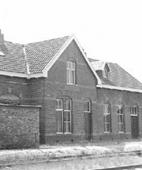

Sint Annaparochie
Sint Annaparochie
- is een dorp in de provincie Friesland en in de gemeente Waadhoeke.
- Het ligt nabij de Waddenzee.
- In 2021 telde Sint Annaparochie 4.830 inwoners.
- Bekenste inwoner was Saskia Uylenburgh, vrouw van schilder Rembrandt van Rijn.
- Sint Annaparochie heeft een centrumfunctie voor de omliggende dorpen.
De Van Harenskerk in Sint Annaparochie
Is een achthoekig gebouw met tentdak en
centraal op het dak geplaatst een 8-kantige opengewerkte dakruiter op een bakstenen onderbouw.
Het gebouw toont kenmerken van de classicistische bouwstijl.
De kerk werd in 1682-1683 gebouwd ter vervanging van een 16e eeuwse kruiskerk.
Initiatief tot de bouw werd genomen door Willem van Haren (1626-1708),
o.a. staatsman, diplomaat en grietman (soort burgemeester).
Aan de voorzijde twee zandstenen ingangen, met decoraties. Tussen beide ingangen,
op de buitengevel heraldische afbeeldingen.
In 1686 bouwde men een 8-zijdige, betrekkelijk kleine grafkapel Van Haren aan het kerkgebouw,
waarin zo'n 13 leden van dit geslacht in de loop der tijd zijn bijgezet.
Heel interessant exterieur, mooie locatie. Het interieur is ook bijzonder,
o.a. de herenbank van de Van Harens, een vroeg 18e eeuwse rijk geornamenteerde preekstoel.
Station Sint Annaparochie

Is een voormalig spoorwegstation aan de spoorlijn Stiens-Harlingen.
Het station werd geopend op 2 december 1902 en gesloten op 1 december 1940.
Het stationsgebouw werd gebouwd in 1901.
Het gebouw ligt aan de Steven Huygenstraat en is tegenwoordig als woonhuis ingericht.
Dit station is gebouwd naar het stationsontwerp met de naam Standaardtype NFLS,
die voornamelijk werd gebruikt voor verschillende spoorwegstations in Friesland.
Het station in Sint Annaparochie viel binnen het type NFLS halte 1e klasse.